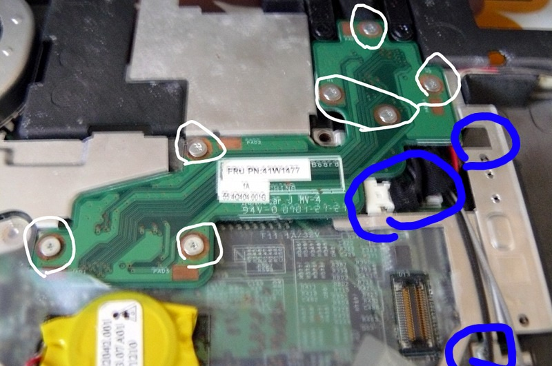
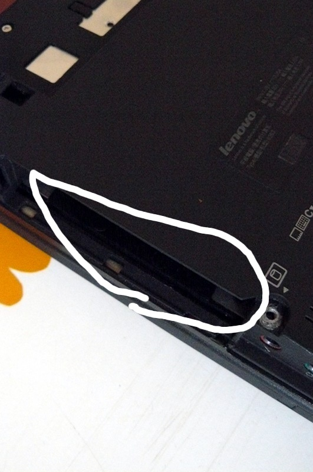
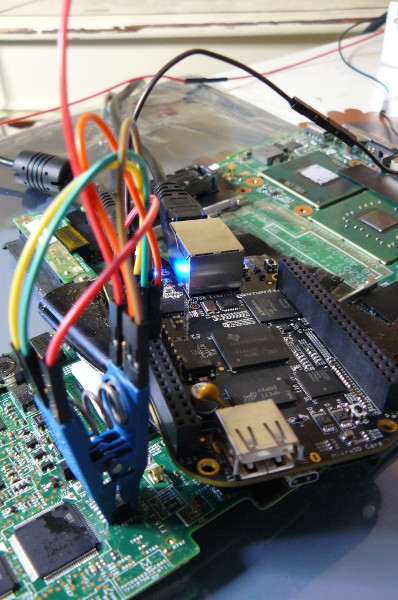

If you're using libreboot from git, note that only CrOS devices build at the moment. We merged a newly rewritten build system recently, and we've yet to complete re-integration of older boards into Libreboot. Use Libreboot 20160907 for the time being, unless you're involved in libreboot development
ThinkPad X60 Tablet: Recovery guide
This section documents how to recover from a bad flash that prevents your ThinkPad X60 Tablet from booting.
Back to previous index
Brick type 1: bucts not reset.
You still have Lenovo BIOS, or you had libreboot running and you flashed another ROM; and you had bucts 1 set and
the ROM wasn't dd'd.* or if Lenovo BIOS was present and libreboot wasn't flashed.
In this case, unbricking is easy: reset BUC.TS to 0 by removing that yellow cmos coin (it's a battery) and putting it back after a minute or two:

*Those dd commands should be applied to all newly compiled X60 ROM images (the ROM images in libreboot binary archives already have this applied!):
dd if=coreboot.rom of=top64k.bin bs=1 skip=$[$(stat -c %s coreboot.rom) - 0x10000] count=64k
dd if=coreboot.rom bs=1 skip=$[$(stat -c %s coreboot.rom) - 0x20000] count=64k | hexdump
dd if=top64k.bin of=coreboot.rom bs=1 seek=$[$(stat -c %s coreboot.rom) - 0x20000] count=64k conv=notrunc
(doing this makes the ROM suitable for use when flashing a system that still has Lenovo BIOS running,
using those instructions: http://www.coreboot.org/Board:lenovo/x60/Installation.
bad rom (or user error), system won't boot
In this scenario, you compiled a ROM that had an incorrect configuration, or there is an actual bug preventing your system from
booting. Or, maybe, you set BUC.TS to 0 and shut down after first flash while Lenovo BIOS was running. In any case, your system is bricked and will not boot at all.
"Unbricking" means flashing a known-good (working) ROM. The problem: you can't boot the system, making this difficult. In this situation, external hardware (see hardware requirements above) is needed which can flash the SPI chip (where libreboot resides).

Remove those screws:

Remove the HDD:

Push keyboard forward to loosen it:

Lift:

Remove those:


Also remove that (marked) and unroute the antenna cables:

For some X60T laptops, you have to unroute those too:

Remove the LCD extend board screws. Also remove those screws (see blue marks) and remove/unroute the cables and remove the metal plate:
Remove that screw and then remove the board:

Now wire up the BBB and the Pomona with your PSU.
Refer to bbb_setup.html for how to setup
the BBB for flashing.
Note, the guide mentions a 3.3v DC PSU but you don't need this on the X60 Tablet:
if you don't have or don't want to use an external PSU, then make
sure not to connect the 3.3v leads mentioned in the guide;
instead, connect the AC adapter (the one that normally charges your
battery) so that the board has power (but don't boot it up)

Correlate the following with the BBB guide linked above:
POMONA 5250:
=== golden finger and wifi switch ====
18 - - 1
22 - - NC ---------- audio jacks are on this end
NC - - 21
3.3V (PSU) - - 17 - this is pin 1 on the flash chip
=== CPU fan ===
This is how you will connect. Numbers refer to pin numbers on the BBB, on the plugs near the DC jack.
Connecting the BBB and pomona (in this image, an external 3.3v DC PSU was used):

Flashrom binaries for ARM (tested on a BBB) are distributed in libreboot_util. Alternatively,
libreboot also distributes flashrom source code which can be built.
SSH'd into the BBB:
# ./flashrom -p linux_spi:dev=/dev/spidev1.0,spispeed=512 -w yourrom.rom
It should be Verifying flash... VERIFIED at the end. If flashrom complains about multiple flash chip
definitions detected, then choose one of them following the instructions in the output.
Reverse the steps to re-assemble your system.
Copyright © 2014, 2015 Leah Rowe <info@minifree.org>
Permission is granted to copy, distribute and/or modify this document
under the terms of the Creative Commons Attribution-ShareAlike 4.0 International license
or any later version published by Creative Commons;
A copy of the license can be found at ../cc-by-sa-4.0.txt
Updated versions of the license (when available) can be found at
https://creativecommons.org/licenses/by-sa/4.0/legalcode
UNLESS OTHERWISE SEPARATELY UNDERTAKEN BY THE LICENSOR, TO THE
EXTENT POSSIBLE, THE LICENSOR OFFERS THE LICENSED MATERIAL AS-IS
AND AS-AVAILABLE, AND MAKES NO REPRESENTATIONS OR WARRANTIES OF
ANY KIND CONCERNING THE LICENSED MATERIAL, WHETHER EXPRESS,
IMPLIED, STATUTORY, OR OTHER. THIS INCLUDES, WITHOUT LIMITATION,
WARRANTIES OF TITLE, MERCHANTABILITY, FITNESS FOR A PARTICULAR
PURPOSE, NON-INFRINGEMENT, ABSENCE OF LATENT OR OTHER DEFECTS,
ACCURACY, OR THE PRESENCE OR ABSENCE OF ERRORS, WHETHER OR NOT
KNOWN OR DISCOVERABLE. WHERE DISCLAIMERS OF WARRANTIES ARE NOT
ALLOWED IN FULL OR IN PART, THIS DISCLAIMER MAY NOT APPLY TO YOU.
TO THE EXTENT POSSIBLE, IN NO EVENT WILL THE LICENSOR BE LIABLE
TO YOU ON ANY LEGAL THEORY (INCLUDING, WITHOUT LIMITATION,
NEGLIGENCE) OR OTHERWISE FOR ANY DIRECT, SPECIAL, INDIRECT,
INCIDENTAL, CONSEQUENTIAL, PUNITIVE, EXEMPLARY, OR OTHER LOSSES,
COSTS, EXPENSES, OR DAMAGES ARISING OUT OF THIS PUBLIC LICENSE OR
USE OF THE LICENSED MATERIAL, EVEN IF THE LICENSOR HAS BEEN
ADVISED OF THE POSSIBILITY OF SUCH LOSSES, COSTS, EXPENSES, OR
DAMAGES. WHERE A LIMITATION OF LIABILITY IS NOT ALLOWED IN FULL OR
IN PART, THIS LIMITATION MAY NOT APPLY TO YOU.
The disclaimer of warranties and limitation of liability provided
above shall be interpreted in a manner that, to the extent
possible, most closely approximates an absolute disclaimer and
waiver of all liability.